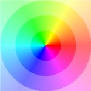
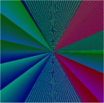

Phasendiagramm von komplexen Funktionen
w = f(z) =

Die Figur stellt ein Phasendiagramm der komplexen Funktion mit Gleichung w = f(z) dar.
Zu jedem z = x+iy wird der Funktionswert w = r(cosφ + isinφ) berechnet. φ bestimmt dann die Farbe des
Pixels z gemäss einer der folgenden Paletten. Vorgewählt ist Palette1, bei der r zudem noch die Intensität bestimmt.
Klicken Sie zur Wahl auf die entsprechende Palette


Klicken Sie als Beispiel auf den nachfolgenden Button und wählen Sie Palette 2.